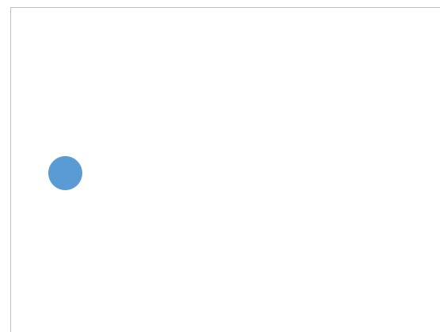

Диаграмма состояний UML
- Диаграмма состояний позволяет описывать поведение системы
- В объектно-ориентированном подходе разрабатывается диаграмма состояний единственного класса, демонстрирующая поведение одного объекта в течение его жизни
- Состояние на диаграмме является более абстрактным понятием, чем состояние объекта (последнее есть комбинация всех данных из полей объекта)
- Диаграмма позволяет проектировать различные способы реакции на события
Пример построения диаграммы состояний
В данном занятии демонстрируется построение диаграммы состояний заявки клиента. Основные шаги построения диаграммы состояний:
- добавление состояний
- указание переходов
- добавление внутренних активностей
- указание подсостояний и суперсостояний
Важно
Для построения диаграммы последовательности используется шаблон "Схема конечного автомата" программы Visio
Добавление состояний
1. Добавляем начальное псевдосостояние

Важно
Начальное псевдосостояние (initial pseudostate) не является состоянием, но имеет стрелку, указывающую на начальное состояние
2. Добавляем возможные состояния
Важно
На диаграмме отображаются состояния, в которых объект может находиться продолжительное время. Состояние может быть прервано вследствие наступления определенного события. Пример состояния заявки: «created»
Указание переходов
1. Отображаем основные переходы

Важно
Переход (transition) означает перемещение из одного состояния в другое и изображается в виде линий, связывающих состояния
2. Добавляем метки
Каждый переход имеет метку, состоящую из следующих необязательных частей:
Триггер-идентификатор — единственное событие, способное вызвать изменение состояния. Пропуск этой части означает, что переход происходит немедленно
Защита — логическое условие, выполнение которого обязательно для осуществления перехода. Пропуск защиты означает, что в ответ на инициирующее событие переход всегда осуществляется
Активность — поведение системы во время перехода. Пропуск активности означает, что в процессе перехода ничего не происходит
На представленной диаграмме методы «ApplyRequest()» и «DeclineRequest()» служат примерами событий, вызывающих переходы между состояниями. Примером защиты является выражение «[Reason != null]», означающее, что для отказа заявки всегда следует указывать причину
Добавление внутренних активностей
Внутренние активности (internal activities) используются для описания действий объекта, совершаемых без перехода. Список основных действий включает следующие значения:
- входное действие (entry) — действие, которое выполняется в момент входа в данное состояние
- выходное действие (exit) — действие, которое выполняется в момент выхода из данного состояния
- выполняющая деятельность (do) — действие, которое выполняется в течение всего времени нахождения объекта в данном состоянии. Разница между обычными и выполняющими деятельностями / активностями состоит в том, что первые происходят мгновенно и не могут быть прерваны обычными событиями
В данном примере с помощью внутренней активности «do/checkResponse» заявка может проверять, пришел ли ответ от тренера
Работа с общими переходами и внутренними активностями
В случае наличия у нескольких состояний общих переходов и внутренних активностей, само состояние можно превратить в подсостояние (substates), а их общее поведение перенести в суперсостояние (superstate). В данном примере заявка может быть отклонена как из состояния «Created», так и из состояния «Accepted». Эти состояния могут быть объединены в суперсостояние «Cancelable»
Итоги
Вы познакомились с правилами построения диаграммы состояний UML.